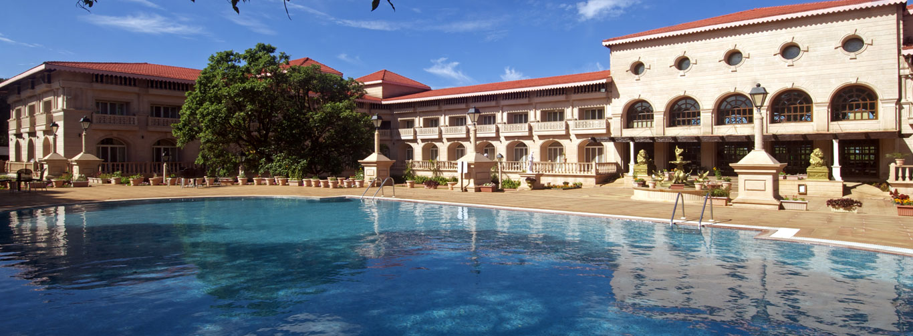

Saj Mahabaleshbar
Tucked away in the Sahyadri Mountain Range, Mahableshwar is a popular hill station in Maharashtra. The famous Mahableshwar Temple, makes the town an important pilgrimage site for Hindus. Mahableshwar is renowned for its acres of strawberry farms. And the resorts in Mahableshwar are an attraction all by themselves!
There are so many reasons to visit Mahableshwar during family vacations in Maharashtra and many Mahableshwar resorts to choose from, too.Mahableshwar is great all year round; cool in the summers, chilly in the winters and fresh green in the monsoons!
Panchgani
Pratapgad Fort And Arthur's Seat
Mahabaleshwar Temple
Venna Lake
Moraji Castle
Hotels
- 
Evershine Keys Prima Resort: Evershine Keys Prima Resort seamlessly blends old-world charm and modern conveniences. A grand architecture inspired by the palaces of Rajasthan that captures the romance and splendour of a royal era. The property is as impressive as the surrounding mountains and an edifice of Dholpur's world-famous Red Stone. The resort houses one of the most stunning hotel lobbies. Spread over 8 acres the resort has big colourful eye catching fountains. A lush and lovingly nurtured garden is hidden in our hotel´s courtyard.
Club Mahindra: Among resorts in Mahableshwar, Club Mahindra affiliate, Saj Mahableshwar resort has the perfect ambience to help you unwind, through a variety of facilities and its surrounding natural beauty.What sets Saj Mahableshwar resort apart from other Mahableshwar resorts is its location! Perched on top of a mountain, this Mahabaleshwar resort gives you some of the most stunning views of Mahableshwar’s natural beauty. Not only that, it is one of those few resorts in Mahableshwar with a swimming pool! You can also visit nearby Panchgani, to take in views from Table Land.
Brightland Resort & Spa: Escape big-city life to a hill-station retreat! Perched on the edge of a cliff, Brightland Resort and Spa is the best luxury resort in Mahabaleshwar offering alluring, misty views of the valley. We combine elegance with untamed natural beauty and offer luxurious accommodation. All this, with unparalleled service and five-star facilities.
Local Food and Festivals
Among the famous food in Mahableshwar, the Maharashtrian Thali is the most complete meal. It consists of dal, rice, chapati, vegetables and salads. Another famous food in Mahableshwar, the Maharashtrian Puran Poli is a chapati, stuffed with grams, ghee and jaggery. Bharli Vangi is another famous food in Mahableshwar. Brinjal is cooked using local Goda masala. Mahableshwar food has a Parsi influence. Traditional Parsi recipes of Dhansak and Berry Pulao are renowned local delicacies.
An appetizing Mahableshwar food recipe, Corn Patties contain a filling of mashed potatoes and spicy corn kernels. A Maharashtrian dish had with chutney and chillies, Vada Pav consists of a deep fried Vada (mashed-potato patty) wrapped in a Pav (bread bun).